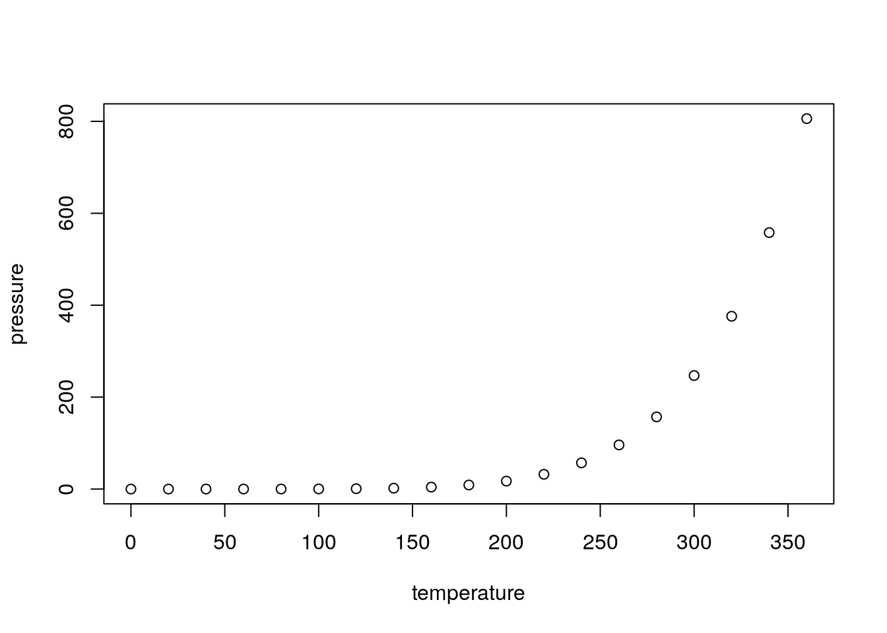

Chapter 3 Setting Up Data Science Project Folders
Once you have created a new project the next step is to organize and name the folders and files in that project. Naming and organizing files seems very boring, but it one of the most important parts of any data science project! Not having the files or the data available is one of the most common reasons that errors are missed in data science projects.
3.0.1 A project organization framework
We will set up data science projects on RStudio Cloud. This is how you should set up every new data science project before you start doing any work. It will be much harder to set up after the project has started and files are scattered everywhere. Open your web browser and navigate to the website https://rstudio.cloud/.
{format: png}
Then log in and click on the project my_first_project.
{format: png}
You should now see a screen that looks like this where there are three windows. The window in the lower right hand corner of the screen is the part that shows all the files you have in your project. Right now there shouldn’t be any files since we just created this project in the last lesson but didn’t do anything in the project.
{format: png}
Each time you start a new project you will need to create a set of folders for that project. You can create a new folder by clicking on New Folder at the top of the file window.
{format: png}
Then you can type in the name of the folder you want to create. First let’s create a folder called data.
{format: png}
You should now see a folder called data in the file window.
{format: png}
Next we will create a few more folders. For each one click the New Folder button, enter the name and click ok. The folders we need to create will be called figures, code, and products. Once you have created the folders you should see something like this.
{format: png}
These folders represent the four parts of any data science project.
- data - is the folder where you will put all the data you have collected or been given to analyze.
- figures - is where you will put plots, data pictures, and other images you have created to show data to other people.
- code - is where you will create code files for collecting, cleaning up, or analyzing data.
- products - this is the place where you will place any reports, presentations, or products you create for sharing with other people.
Now that we have these folders in place the next thing you need to create is a README file. This is a file where you will describe all of the data and projects you will be doing. Every project should have a README file so that you can keep notes on what you have done during your project. You will add to this README as your project expands.
To create the README file click File at the top left hand part of Rstudio.
{format: png}
then over over New File to show the types of new files you can create. Move the cursor down and click on Text File.
{format: png}
You should see a new screen open with the title Untitled like this.
{format: png}
To save the file click on the disk icon in the top left hand corner of the screen.
{format: png}
Then you can title the file README.md and click Save to save it.
{format: png}
You should now see the README.md file in your file list on the bottom right of the screen.
{format: png}
The next thing to do is fill in the README file with the initial description of your project. For now you can copy this text and paste it into your README file, then click the save button.
# This is the README file for my_first_project
The folders in this project are:
* _data_ - is the folder where you will put all the data you have collected or been given to analyze.
* _figures_ - is where you will put plots, data pictures, and other images you have created to show data to other people.
* _code_ - is where you will create code files for collecting, cleaning up, or analyzing data.
* _products_ - this is the place where you will place any reports, presentations, or products you create for sharing with other people.The README file can be used to describe both the high level organization as well as any important special cases about your project. It may be helpful to create additional README files in each subfolder to provide information specific to the files in that subfolder. You would want to link to them from the global README file you have just created.
3.0.2 The next level of organization
This is the top level of the organization of a new data science project, but we will usually need to create a little more organization within each folder. For example if you click on the data folder you will see that it is empty.
{format: png}
You can see at the top of the file organization tab that you are inside the folder data which is inside of the folder project.
{format: png}
We need to create two new folders inside of the data folder, one for our raw data and one for our tidy data. You will learn a lot more about them later, but for now use the New Folder button
{format: png}
to create one folder called raw_data and another called tidy_data.
{format: png}
One way to write the folders we have now created is like this.
- data/
- raw_data/
- tidy_data/
- code/
- figures/
- products/
Here you can see that the raw_data folder is inside of the data folder. You can now click on the word project at the top of the file window and it will take you back up one level so you will see the folders for data, code, figures, and products.
{format: png}
The rest of the folders we will need can be written in that same way. The folder structure would look something like this.
- data/
- raw_data/
- tidy_data/
- code/
- raw_code/
- final_code/
- figures/
- exploratory_figures/
- explanatory_figures/
- products/
- writing/
We need to create the folders raw_code and final_code inside of the code folder. We also need the folders exploratory_figures and explanatory_figures in the figures folder. Finally we need the folder writing inside of the products folder.
Using the same steps we did for creating the folders inside of the data folder, you can create the rest of the folders you will need to organize your data science project. Every time you start a new project you will need to do these steps to set up the folders you will need to store all the files you will be creating. In the next lesson we will talk about how to name the files that will go in these folders.
{format: png}
3.1 R Markdown
This is an R Markdown document. Markdown is a simple formatting syntax for authoring HTML, PDF, and MS Word documents. For more details on using R Markdown see http://rmarkdown.rstudio.com.
When you click the Knit button a document will be generated that includes both content as well as the output of any embedded R code chunks within the document. You can embed an R code chunk like this:
summary(cars)## speed dist
## Min. : 4.0 Min. : 2.00
## 1st Qu.:12.0 1st Qu.: 26.00
## Median :15.0 Median : 36.00
## Mean :15.4 Mean : 42.98
## 3rd Qu.:19.0 3rd Qu.: 56.00
## Max. :25.0 Max. :120.003.2 Including Plots
You can also embed plots, for example:

Note that the echo = FALSE parameter was added to the code chunk to prevent printing of the R code that generated the plot.